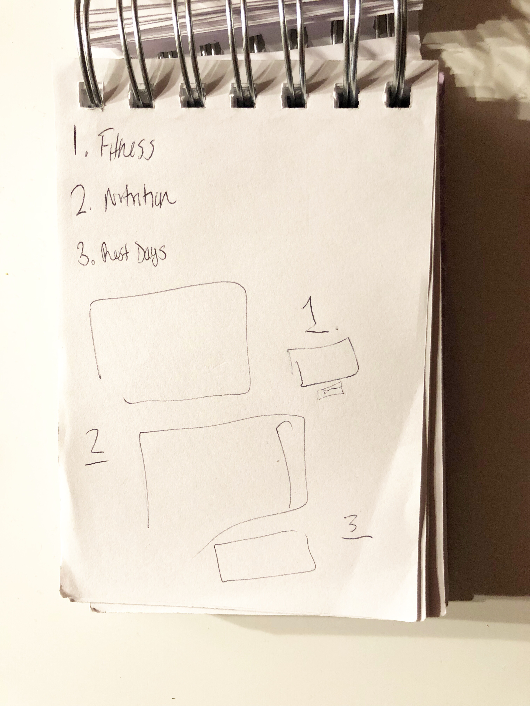

A friend of mine struggled to be consistent with working out
at the Montclair State University (MSU) Recreational Center due to a
hectic schedule as well as with incorporating healthy meals in her daily life.
After observing this problem, I decided to develop a solution.
I built a resource where she will be able to follow along
with a YouTube Personal Trainer for short workouts and select easy to make healthy
recipes for breakfast, lunch and dinner. As more of an add-on,
I included a page of suggested videos to watch as well as books
and articles to read, based on her interests, to emphasize the
importance of Recovery Days.
__________
What software did I use to create this project?
Atom
How did I code this project?
HTML & CSS
__________
HOME PAGE
The formation of the Home Page is 1 2 3 as shown.
The layout of the page, as shown by my sketches below,
evolved as I worked with HTML & CSS to see what was visually
pleasing to look at for the user.
-
Above is the first draft of the home page.
Upon coding
the very first section,
I realized it was not coming out how I envisioned it to be.
- 
Above is the final draft of the home page.
After not looking at the project
for a couple days,
I was able to approach it in a new perspective.
__________

EXERCISE PAGE
-
Above is a Draft of the Exercise Page
-
-
For this page, the general idea was for the exercises to be in
grid format and clickable to be taken to a video focusing on
either Arms, Abdominal or Full Body.
When the user clicks on each word in the navigation, they get taken
to the section of the page they selected.
-
Above is the Final version of the Arm section of the Exercise Page.
__________
NUTRITION PAGE
Similar to the Exercise Page, when the user clicks on either Breakfast,
Lunch or Dinner in the navigation, they will be taken to that section of the page.
When the user clicks either the image/caption they will be re-directed to
the recipe.
__________
RECOVERY DAYS PAGE
Above are sections of the Recovery Page.
-
Above is a Draft of the Recovery Page
-
-
For this page, the general idea was to have a collection of
suggested articles and videos for the user to watch. After
asking my friend what she preferred to watch and read in
her free time, I selected articles, books and YouTube videos
that correlated with her response.
My friend has the option of either clicking the image or the caption
for the rows of 4. For the mid-section of each page, she has the option
of selecting either the image or the button that accompanies it below.
__________
To view the project itself, you may click here: Fitness & Nutrition